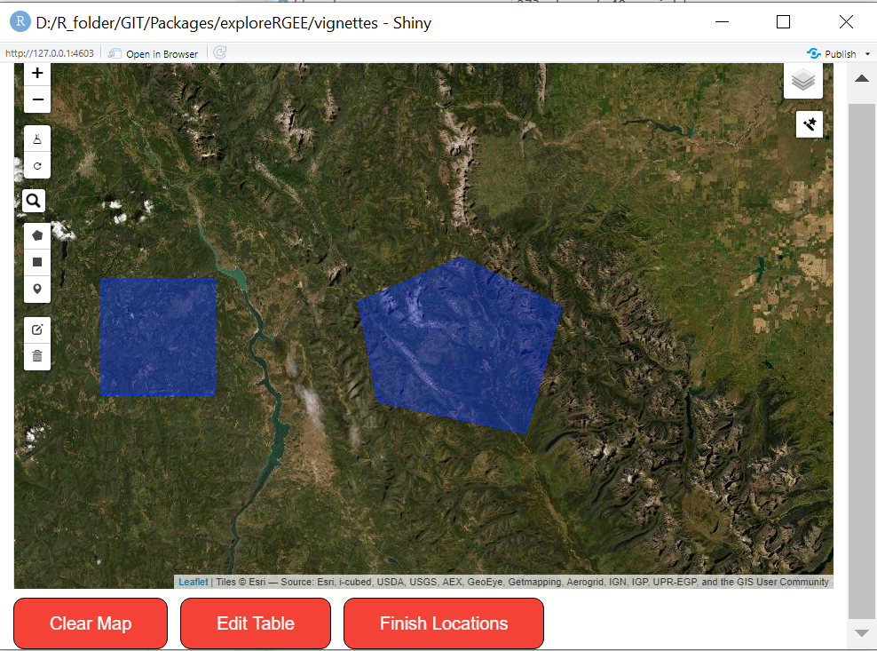
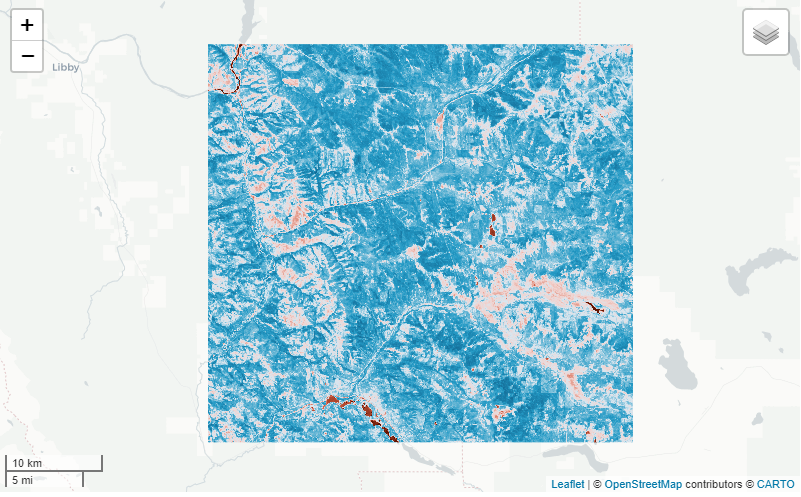
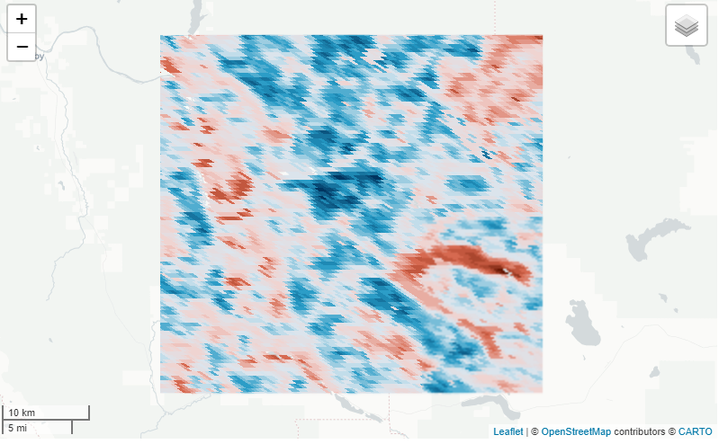
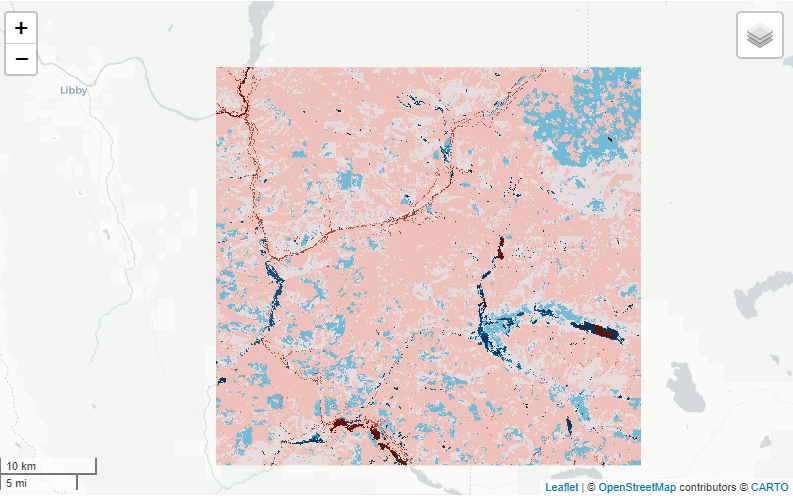

We’ll go through as much as we can with the get_*()’s in exploreRGEE. Also, we’ll look at the aoi_draw() function and how that’s incorporated into the workflow. The main purpose of the get_()’s is to handle as much preprocessing as possible. One of the most frustrating things about getting an Image or ImageCollection outside earth engine (online) is remembering or having to navigate to get the ID, e.g. “LANDSAT/LC08/C01/T1_SR”. The functions below will hopefully lessen that frustration so the user can easily get started in a workflow. Other reasons to use include filtering by bounds (location), date, month and mask, which are standard arguments in common workflows.
aoi_draw() helps with getting a quick area of interest, polygons or points. This means less time figuring out bounding boxes and more time for analysis! Below is a quick example using the function from which we’ll use in the get_()’s.
Just call aoi_draw() and a shiny app will open. From there just use the left pane to either get points, polygons or rectangles. You can also edit the table as well by editing the ‘ID’ column in the app by clicking ‘Edit Table’. In addition, ‘Clear Map’ will clear the choices you’ve already made, i.e. clean slate.

When your done, just either use ‘Finish Locations’ or exit out of the app. A sf object will be saved as aoi in your current environment. From there, you can use it in the rest of your analysis.
Below we’ll go over a few get_*() functions; meteorological and landsat.
The main arguments are the method (what you want?), dates (what years do you want?), months (what months do you want?), stat (how do you want to reduce the pixel?) and mask (do you want to mask?); but, the one thing you do need is an area of interest or else the functions don’t know where you want to do all these things! So, below is a basic example of getting monthly precipitation from PRISM from 2018 to 2020 while only including months April to October and reducing the pixel by the median.
aoi <- exploreRGEE::huc
get_prism <- get_met(aoi = aoi,
method = 'AN81m',
startDate = '2018-01-01',
endDate = '2020-12-31',
stat = 'median',
c.low = 4,
c.high = 10)## Warning in CPL_gdal_init(): GDAL Error 1: Can't load requested DLL: C:\Program Files (x86)\GDAL\gdalplugins\gdal_BAG.dll
## 193: %1 is not a valid Win32 application.
## Warning in CPL_gdal_init(): GDAL Error 1: Can't load requested DLL: C:\Program Files (x86)\GDAL\gdalplugins\gdal_BAG.dll
## 193: %1 is not a valid Win32 application.## Warning in CPL_gdal_init(): GDAL Error 1: Can't load requested DLL: C:\Program Files (x86)\GDAL\gdalplugins\gdal_FITS.dll
## 193: %1 is not a valid Win32 application.
## Warning in CPL_gdal_init(): GDAL Error 1: Can't load requested DLL: C:\Program Files (x86)\GDAL\gdalplugins\gdal_FITS.dll
## 193: %1 is not a valid Win32 application.## Warning in CPL_gdal_init(): GDAL Error 1: Can't load requested DLL: C:\Program Files (x86)\GDAL\gdalplugins\gdal_GMT.dll
## 193: %1 is not a valid Win32 application.
## Warning in CPL_gdal_init(): GDAL Error 1: Can't load requested DLL: C:\Program Files (x86)\GDAL\gdalplugins\gdal_GMT.dll
## 193: %1 is not a valid Win32 application.## Warning in CPL_gdal_init(): GDAL Error 1: Can't load requested DLL: C:\Program Files (x86)\GDAL\gdalplugins\gdal_HDF4.dll
## 193: %1 is not a valid Win32 application.
## Warning in CPL_gdal_init(): GDAL Error 1: Can't load requested DLL: C:\Program Files (x86)\GDAL\gdalplugins\gdal_HDF4.dll
## 193: %1 is not a valid Win32 application.## Warning in CPL_gdal_init(): GDAL Error 1: Can't load requested DLL: C:\Program Files (x86)\GDAL\gdalplugins\gdal_HDF4Image.dll
## 193: %1 is not a valid Win32 application.
## Warning in CPL_gdal_init(): GDAL Error 1: Can't load requested DLL: C:\Program Files (x86)\GDAL\gdalplugins\gdal_HDF4Image.dll
## 193: %1 is not a valid Win32 application.## Warning in CPL_gdal_init(): GDAL Error 1: Can't load requested DLL: C:\Program Files (x86)\GDAL\gdalplugins\gdal_HDF5.dll
## 193: %1 is not a valid Win32 application.
## Warning in CPL_gdal_init(): GDAL Error 1: Can't load requested DLL: C:\Program Files (x86)\GDAL\gdalplugins\gdal_HDF5.dll
## 193: %1 is not a valid Win32 application.## Warning in CPL_gdal_init(): GDAL Error 1: Can't load requested DLL: C:\Program Files (x86)\GDAL\gdalplugins\gdal_HDF5Image.dll
## 193: %1 is not a valid Win32 application.
## Warning in CPL_gdal_init(): GDAL Error 1: Can't load requested DLL: C:\Program Files (x86)\GDAL\gdalplugins\gdal_HDF5Image.dll
## 193: %1 is not a valid Win32 application.## Warning in CPL_gdal_init(): GDAL Error 1: Can't load requested DLL: C:\Program Files (x86)\GDAL\gdalplugins\gdal_KEA.dll
## 193: %1 is not a valid Win32 application.
## Warning in CPL_gdal_init(): GDAL Error 1: Can't load requested DLL: C:\Program Files (x86)\GDAL\gdalplugins\gdal_KEA.dll
## 193: %1 is not a valid Win32 application.## Warning in CPL_gdal_init(): GDAL Error 1: Can't load requested DLL: C:\Program Files (x86)\GDAL\gdalplugins\gdal_netCDF.dll
## 193: %1 is not a valid Win32 application.
## Warning in CPL_gdal_init(): GDAL Error 1: Can't load requested DLL: C:\Program Files (x86)\GDAL\gdalplugins\gdal_netCDF.dll
## 193: %1 is not a valid Win32 application.## Warning in CPL_gdal_init(): GDAL Error 1: Can't load requested DLL: C:\Program Files (x86)\GDAL\gdalplugins\gdal_BAG.dll
## 193: %1 is not a valid Win32 application.
## Warning in CPL_gdal_init(): GDAL Error 1: Can't load requested DLL: C:\Program Files (x86)\GDAL\gdalplugins\gdal_BAG.dll
## 193: %1 is not a valid Win32 application.## Warning in CPL_gdal_init(): GDAL Error 1: Can't load requested DLL: C:\Program Files (x86)\GDAL\gdalplugins\gdal_FITS.dll
## 193: %1 is not a valid Win32 application.
## Warning in CPL_gdal_init(): GDAL Error 1: Can't load requested DLL: C:\Program Files (x86)\GDAL\gdalplugins\gdal_FITS.dll
## 193: %1 is not a valid Win32 application.## Warning in CPL_gdal_init(): GDAL Error 1: Can't load requested DLL: C:\Program Files (x86)\GDAL\gdalplugins\gdal_GMT.dll
## 193: %1 is not a valid Win32 application.
## Warning in CPL_gdal_init(): GDAL Error 1: Can't load requested DLL: C:\Program Files (x86)\GDAL\gdalplugins\gdal_GMT.dll
## 193: %1 is not a valid Win32 application.## Warning in CPL_gdal_init(): GDAL Error 1: Can't load requested DLL: C:\Program Files (x86)\GDAL\gdalplugins\gdal_HDF4.dll
## 193: %1 is not a valid Win32 application.
## Warning in CPL_gdal_init(): GDAL Error 1: Can't load requested DLL: C:\Program Files (x86)\GDAL\gdalplugins\gdal_HDF4.dll
## 193: %1 is not a valid Win32 application.## Warning in CPL_gdal_init(): GDAL Error 1: Can't load requested DLL: C:\Program Files (x86)\GDAL\gdalplugins\gdal_HDF4Image.dll
## 193: %1 is not a valid Win32 application.
## Warning in CPL_gdal_init(): GDAL Error 1: Can't load requested DLL: C:\Program Files (x86)\GDAL\gdalplugins\gdal_HDF4Image.dll
## 193: %1 is not a valid Win32 application.## Warning in CPL_gdal_init(): GDAL Error 1: Can't load requested DLL: C:\Program Files (x86)\GDAL\gdalplugins\gdal_HDF5.dll
## 193: %1 is not a valid Win32 application.
## Warning in CPL_gdal_init(): GDAL Error 1: Can't load requested DLL: C:\Program Files (x86)\GDAL\gdalplugins\gdal_HDF5.dll
## 193: %1 is not a valid Win32 application.## Warning in CPL_gdal_init(): GDAL Error 1: Can't load requested DLL: C:\Program Files (x86)\GDAL\gdalplugins\gdal_HDF5Image.dll
## 193: %1 is not a valid Win32 application.
## Warning in CPL_gdal_init(): GDAL Error 1: Can't load requested DLL: C:\Program Files (x86)\GDAL\gdalplugins\gdal_HDF5Image.dll
## 193: %1 is not a valid Win32 application.## Warning in CPL_gdal_init(): GDAL Error 1: Can't load requested DLL: C:\Program Files (x86)\GDAL\gdalplugins\gdal_KEA.dll
## 193: %1 is not a valid Win32 application.
## Warning in CPL_gdal_init(): GDAL Error 1: Can't load requested DLL: C:\Program Files (x86)\GDAL\gdalplugins\gdal_KEA.dll
## 193: %1 is not a valid Win32 application.## Warning in CPL_gdal_init(): GDAL Error 1: Can't load requested DLL: C:\Program Files (x86)\GDAL\gdalplugins\gdal_netCDF.dll
## 193: %1 is not a valid Win32 application.
## Warning in CPL_gdal_init(): GDAL Error 1: Can't load requested DLL: C:\Program Files (x86)\GDAL\gdalplugins\gdal_netCDF.dll
## 193: %1 is not a valid Win32 application.Now all this does is ‘prep’ the area of interest for future functions like viz(), rr() and band(). That’s not completely true though because if you look at the list it will contain an ImageCollection, Image, geom, etc.
get_prism## $imageCol
## EarthEngine Object: ImageCollection
## $data
## EarthEngine Object: Image
## $geom
## EarthEngine Object: Geometry
## $method
## [1] "AN81m"
##
## $param
## NULL
##
## $stat
## [1] "median"
##
## $startDate
## [1] "2018-01-01"
##
## $endDate
## [1] "2020-12-31"
##
## $c.low
## [1] 4
##
## $c.high
## [1] 10
##
## $mask
## [1] FALSE
##
## $m.low
## NULL
##
## $m.high
## NULL
##
## $bbox
## [1] -115.1318 48.7754 -114.8868 48.9512
##
## $aoi
## Simple feature collection with 2 features and 10 fields
## Geometry type: POLYGON
## Dimension: XY
## Bounding box: xmin: -115.1318 ymin: 48.7754 xmax: -114.8868 ymax: 48.9512
## Geodetic CRS: WGS 84
## # A tibble: 2 x 11
## id huc12 tohuc areaacres areasqkm name hutype humod states noncontrib
## * <chr> <chr> <chr> <dbl> <dbl> <chr> <chr> <chr> <chr> <int>
## 1 huc12.f~ 17010~ 17010~ 8085. 32.7 Sinc~ S NM MT 0
## 2 huc12.f~ 17010~ UNKNO~ 40035. 162. Toba~ S ID MT 0
## # ... with 1 more variable: geometry <POLYGON [°]>m
##
## attr(,"class")
## [1] "met_list"This is important because you might want to do other things with the Image or ImageCollection you just processed. For example, let’s say we want to get landsat data real quick using the get_landsat() but also want to use eemont processing steps. Then just call that ImageCollection from the list. Important Note - cloud_mask = FALSE to use with eemont. This provides you with a ImageCollection that’s been filtered by geom (location) and date (years, months).
library(reticulate)
eemont <- import('eemont')
get_ld8 <- get_landsat(aoi = aoi,
method = 'ld8',
startDate = '2018-01-01',
endDate = '2020-12-31',
stat = 'median',
cloud_mask = FALSE,
c.low = 6,
c.high = 10)
mont_ld8 <- get_ld8$imageCol$
maskClouds()$
scale()$
index('vegetation')$
median()
# to visualize provide an area of interest to 'user_shape'
mont_ld8 %>% viz(band = 'NDVI', min = 0, max = 1, user_shape = aoi)
In addition, you may want something else like a Moderate Resolution Imaging Spectroradiometer (MODIS) product. To use the functionality as seen in previous examples, just call the get_any(). This function allows the user to provide an earth engine collection snippet (method = ...) to get the same normal processing steps as above. Be aware of the Image or ImageCollection that you are calling! Just like in GEE online, you need to know what the appropriate arguments are…
modis_lai <- get_any(aoi, i_type = 'ImageCollection',
method = "MODIS/006/MCD15A3H",
startDate = '2010-01-01',
endDate = '2019-12-31',
c.low = 4,
c.high = 10,
stat = 'median')
modis_lai %>% viz(scale = 500, band = 'Lai')
For an Image
nlcd <- get_any(aoi, i_type = 'Image',
method = 'USGS/NLCD/NLCD2011')
nlcd %>% viz(scale = 30, band = 'landcover')